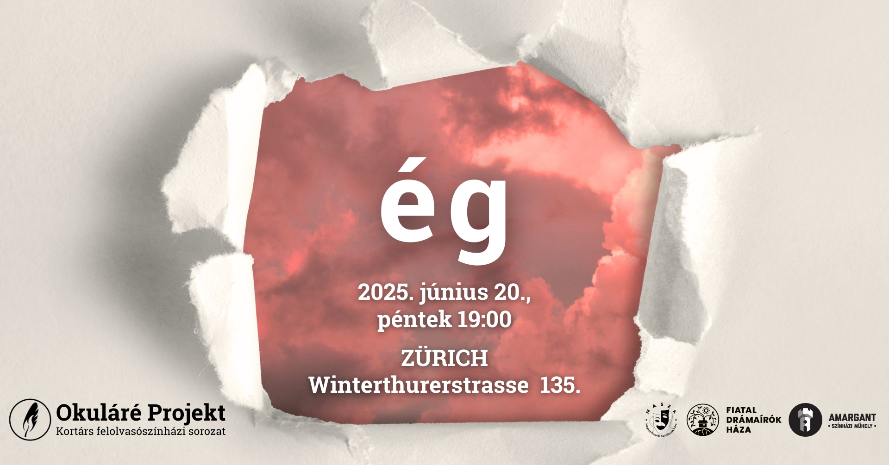
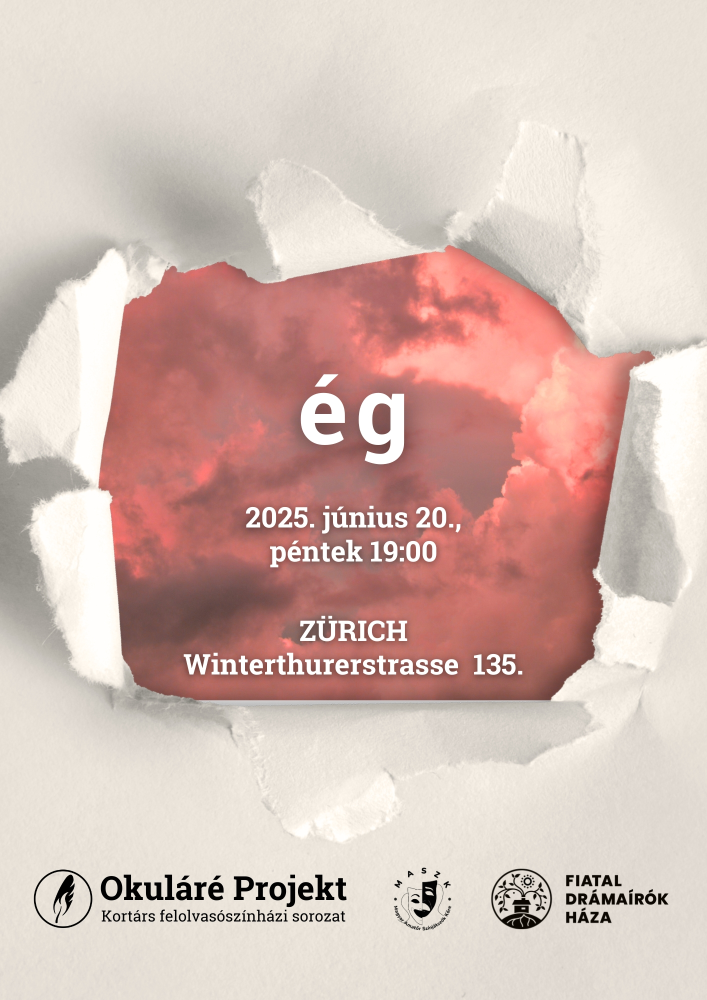

👑 Mérész Bogi – Ég veled, király!
Király: Bednár János
Paraszt: Incze Dalma Emőke
Bolond: Somogyvári Kristóf
I. nemes: Lipcsei Ferenc
II. nemes: Mikle Fázin
🎬 Rendező: Balázs Anna Mária (Amy)
🌌 Stermeczky Boglárka Eszter – Rádiójáték
Olivér: Bednár János
Benjámin: Somogyvári Kristóf
Pólya néni: Mikle Fázin
Takaró néni: Incze Dalma Emőke
Gáspár bácsi: Lipcsei Ferenc
🎬 Rendező: Szabó Tímea
🔥 Wolff Nikoletta – Anya, ég a rántott hús!
Rita: Szabó Tímea
Iskolás Vanda: Incze Dalma Emőke
Iskolás Ádám: Somogyvári Kristóf
Felnőtt Vanda: Mikle Fázin
Felnőtt Ádám: Bednár János
🎬 Rendező: Lipcsei Ferenc

